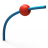

Points on curve
 | Generate one or more points on a curve, boundary or edge. → |
Generate one or more points on a curve, boundary or edge.
Select
Select the curves  . The number of selected entities is displayed.
. The number of selected entities is displayed.
Sampling
On extension  creates points outside the curve on a temporary extension of the curve parameters. Create point cloud combines several points in a point cloud. By length shows the Start and End as a length.
creates points outside the curve on a temporary extension of the curve parameters. Create point cloud combines several points in a point cloud. By length shows the Start and End as a length.

Parameter
The points are aligned following the parameters of the curve. You can set the parameters for the Start  and End
and End  and the number of points No. of points
and the number of points No. of points  .
.
Inflections
Calculate inflection points of a curve for a selected direction. The number of inflection points is displayed.
For spatially curved curves, select the Direction  for the calculation and display of the curvature plot
for the calculation and display of the curvature plot  .
.
Select the reference direction with the aid of an entity  , specify using 2 points
, specify using 2 points  or by selecting an axial direction of the current (X Wp, Y Wp, Z Wp)
or by selecting an axial direction of the current (X Wp, Y Wp, Z Wp)  . If View is selected, the reference direction will be the same as the current view in the graphics area
. If View is selected, the reference direction will be the same as the current view in the graphics area  .
.

Show curvature plot: Display a directional curvature plot to visually check the curvature or curvature radius course of curves and boundaries. Change the size of the display using the slide control.
NURBS data
Insert points at characteristic positions of a NURBS curve.
Spans: Create points at arc transitions.
Control points: Create points at the control point positions of the NURBS curve.
Cusps: Insert points at G0 positions.